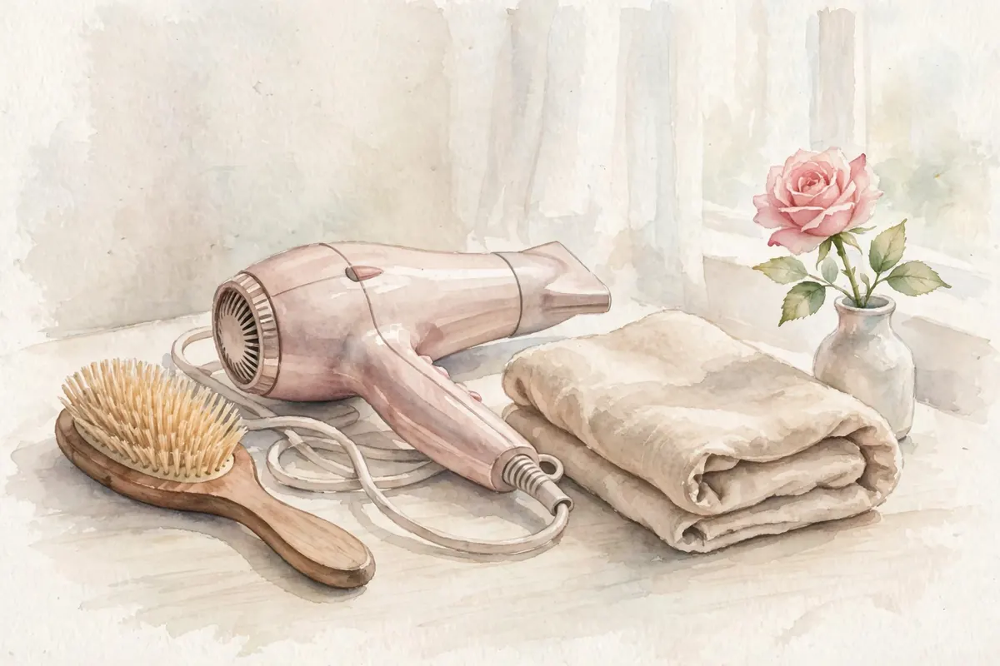

トップ ＞ ヘアケア ＞ サロンカラーの間隔の考え方と、ホームケアの表示の見方
サロンカラーの間隔の考え方と、ホームケアの表示の見方

サロンでカラーをしたあと、次はいつ行けばいいのか、家では何に気をつければいいのか。施術の現場でも、カラーの間隔について聞かれることがあります。間隔は、髪の伸びる速さや色の落ち方、白髪の目立ち方で変わります。この記事では、サロンカラーの間隔の考え方と、ホームケアの表示の見方を整理します。
間隔の考え方
間隔を決めるいちばんの目安は、根元の伸びです。髪は1か月に1センチほど伸びると言われています。根元の地毛の色が見えてきたら、次のカラーのタイミングを考える頃合いです。白髪が気になる方は、根元の白髪の目立ち方がタイミングの目安になります。全体の色の落ち方も、間隔を決める材料です。色が抜けてきたと感じたら、サロンで相談してみてください。
全体染めとリタッチ（根元だけの染め直し）では、間隔の考え方が違います。全体染めは、色を整え直すための施術で、リタッチは伸びた根元だけを染める施術です。リタッチを挟むことで、全体染めの回数を減らす、という進め方もあります。どちらが向いているかは、髪の長さや色の落ち方で変わるので、施術者に相談するのが基本です。
短い間隔での繰り返しは、頭皮や髪への負担を考える材料になります。カラーのあとに頭皮のかゆみや赤みが続く場合は、間隔を空けるか、施術者に相談してください。前回のカラーの日時と、使った薬剤の種類を伝えると、施術者が間隔を判断しやすくなります。サロンのメモに、前回の施術内容を残しておく、という方法もあります。
ホームケアの表示の見方
カラーのあとのホームケアでは、シャンプーとトリートメントの表示を確認します。カラーケア用と書かれた商品には、色持ちへの配慮が表示されていることがあります。パッケージに「カラーした髪用」「色持ち」といった案内がある場合は、その表示を目安にします。洗うときのお湯の温度も、表示で確認しておきたい点です。熱いお湯での洗髪は、色落ちの原因になることがあるため、ぬるま湯を使う、という案内が書かれている商品もあります。
トリートメントの置く時間も、表示で確認しておきたい点です。パッケージに「数分置いてから流す」といった案内がある場合は、その時間に従います。置く時間が短すぎると、なじむ前に流してしまうことになり、長すぎると、すすぎ残しの原因になることがあります。置いているあいだは、体を洗うなど、ほかの段取りを進めておくと、待ち時間が無駄になりません。
すすぎの段取りも、カラー後のケアのうちです。シャンプーやトリートメントをしっかり洗い流すことで、頭皮に残りにくくなります。洗ったあとは、タオルで軽く水気を取ってから、ドライヤーで乾かします。ドライヤーは、髪から離して、同じ場所に当て続けないようにするのが基本です。紫外線の強い日の外出では、帽子や日傘を使う、という段取りも、色持ちを考えるうえでの工夫になります。
カラー当日の段取りと注意点
カラーの当日は、施術者からの案内に従うのが基本です。「当日はシャンプーを控える」「24時間は洗髪を控える」といった案内がある場合は、それに従います。頭皮に傷やかゆみがあるときは、施術の前に施術者へ伝えてください。体調がすぐれない日は、無理に施術を受けずに、日程を相談する、という選択肢もあります。
初めてのサロンや、初めて使う薬剤の場合は、パッチテストの案内を確認しておきます。パッチテストは、薬剤が肌に合うかどうかを事前に確かめるための手順です。テストの結果、かゆみや赤みが出た場合は、その薬剤での施術は控えます。気になることがあれば、サロンや皮膚科などの専門家に相談してください。この記事はサロンカラーの間隔とホームケアの案内であり、サロンごとの案内がある場合は、そちらが優先です。
セラフィナ「カラーの間隔は、根元の伸びと色の落ち方で決めるのが基本だよ。迷ったらサロンで相談してみて」

セラフィナ｜美容の道具箱の案内役
「量と表示が分かれば、美容は失敗しない。」——セラフィナと白猫のモコが、買う前のチェックポイントを案内します。綺麗になりたい気持ちに正直に、でも表示は冷静に読むのが、このサイトの約束です。